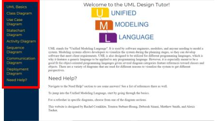

Good question! The lefthand side of the screen, which we call the sidebar, is used to navigate between sections of the tutor, but you probably already knew that since you were able to navigate here! However, below you can see a rough quality image that shows the sidebar in a redbox.
When you're in a section, you'll see a handy page system at the bottom of the screen, which we call the footer. You can use the footer to skip around the section to find the information you're looking for or to take a quiz to test your comprehension and and understanding. Below, you can see a rough quality image that shows the footer in a redbox.
The quiz just simply works by you clicking or typing your desired answers, and when you're done, simply press the "check" button to get your results. After scrolling to the bottom of the page, you should see the big blue check button, but below is an image that shows it in a redbox.
Note about the quiz though: We don't grade you based on your answers. This is mainly due to the scenario questions because UML can be implemented based on how the developer feels it should be, which could mean they have their own naming conventions, biases, etc. that contribute to the answer. You can ignore the "Incorrect" result given by the quiz if you feel, but we'd suggest you consider the explanation given.
Since you asked so nicely, you can see a full list of references at the bottom of this page! Keep in mind: this information could include some practices of UML use that have become outdated or frownded upon by the time you're reading this. So, if this doesn't get you an A+ on your Software Requirements Specification Document, it isn't our fault! We did our best.
We're just 5 students from the University of Michigan - Dearborn. This website was created and designed by Rachel Cronkhite, Trenton Stebner-Hoang, Deborah Sinani, Matthew Smith, and Alexis Tucker.
Try reading some of the sections to find out how! I'm sure it should help at least a little.
Are you a student to in computer science or a related field? If yes, you're at the right section! Try spending some time researching each diagram mentioned here, and see our references at the bottom for a place to start. If no, that's to be expected; UML is a very technical "language" to be used by software developers.
If you mean UML, yes, absolutely! However, the exact way it is used could vary between company to company or developer to developer. This is all just a basic outline of the design diagrams that UML encompasses. Oh, if you mean this website...well, you're here.
IBM. Retrieved from https://www.ibm.com/docs/en/rsar/9.5?topic=designing-modeling
Pressman, R. S., & Maxim, B. R. (2020). Software Engineering: A Practitioner's Approach (Ninth ed.). New York, NY: McGraw-Hill.
What is UML (2005, July). In UML. Retrieved from https://www.uml.org/what-is-uml.htm